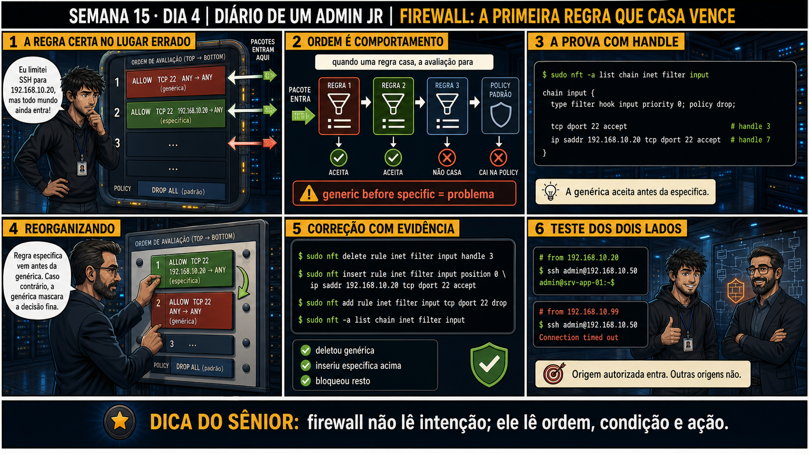

DIARIO DE UM ADMIN JR. | FASE 2 — REDES, DO IP AO DIAGNÓSTICO
🧠 Antes de começar — 20 segundos de memória (Dia 3)
1. Ontem você confirmou serviço escutando E firewall bloqueando, sem nunca desligar a proteção. Sem olhar: qual comando prova a ausência de uma regra de accept, sem precisar desativar nada? 2. Hoje as duas regras (genérica e específica) EXISTEM, mas o comportamento é o errado. Isso é ausência de regra, ou outra coisa?
1.sudo nft list ruleset — mostra a policy e todas as regras, deixando claro se falta um accept pra porta específica. 2. Outra coisa: hoje as regras certas existem, mas a ORDEM entre elas está errada — o firewall lê de cima pra baixo, e a primeira regra que casar decide, mesmo que uma regra mais específica venha depois.
🔗 Conecta com o Dia 2 (nftables básico): Você já sabe que rules são avaliadas
de cima pra baixo. Hoje aparece o efeito colateral disso: uma regra genérica ANTES de uma específica mascara
a decisão fina — a regra certa até existe no firewall, mas nunca chega a ser avaliada.
🔓 Privilégio de hoje: reconhecer o padrão "regra certa no lugar errado". Você
ganha a prova com handle (nft -a list) pra identificar exatamente qual regra está "roubando" a decisão de
outra, e o procedimento de reordenar com evidência, testando dos dois lados depois.
Semana 15 · Dia 4 | Nível Júnior — Redes
Firewall: a Primeira Regra que Casa Vence
firewall não lê intenção; ele lê ordem, condição e ação
ANTES DE ALTERAR, OBSERVE. DEPOIS DE ALTERAR, VALIDE.

1. O chamado
#6390PRIORIDADE ALTA09:05aberto por: administrador de segurança
host: srv-app-09 · serviço: SSH
"Eu limitei SSH para 192.168.10.20, mas todo mundo ainda entra!"
A regra específica existe no firewall. Por que ela não está funcionando?
💡 Passa o mouse nas palavras destacadas pra ver uma dica rápida — clica se quiser a explicação completa com analogia.
2. O sênior te conta
Semana passada, outro ticket
Um colega jurava que tinha restrito SSH só pra um IP específico, mas um teste de auditoria mostrou
qualquer origem conseguindo entrar. Ele mostrou a regra: ip saddr 192.168.10.20 tcp dport 22
accept — existia, estava certa. O problema era outra regra, mais acima na chain:
tcp dport 22 accept, sem restrição de origem nenhuma, que já tinha sido adicionada meses
antes num teste rápido e nunca removida. Como ela vinha primeiro, todo pacote SSH já era aceito ali —
a regra restritiva, tecnicamente correta, nunca chegava a ser avaliada.
O ponto que fica: firewall não lê intenção, lê ordem, condição e ação. Uma regra genérica antes de uma
específica mascara a decisão fina, mesmo que a específica esteja perfeita no papel. É o mesmo tipo de
bug que aparece quando um clone de configuração herda uma regra ampla e ninguém percebe que ela esconde
erros mais específicos por trás.
3. Decodificador de conceitos
Clica em qualquer termo pra ver a definição completa e uma analogia do dia a dia:
4. Ferramentas e leitura da evidência
Comando
O que revela
nft -a list chain
Mostra as regras com seus handles (identificadores únicos), permitindo referência exata.
nft delete rule ... handle N
Remove uma regra específica pelo handle.
nft insert rule ... position 0
Insere uma regra no topo da chain, garantindo avaliação prioritária.
$ sudo nft -a list chain inet filter input
chain input {
type filter hook input priority 0; policy drop;
tcp dport 22 accept # handle 3
ip saddr 192.168.10.20 tcp dport 22 accept # handle 7
}
--- correção com evidência ---
$ sudo nft delete rule inet filter input handle 3
$ sudo nft insert rule inet filter input position 0 \
ip saddr 192.168.10.20 tcp dport 22 accept
$ sudo nft add rule inet filter input tcp dport 22 drop
$ sudo nft -a list chain inet filter input
--- teste dos dois lados ---
# from 192.168.10.20
$ ssh admin@192.168.10.50
admin@srv-app-01:~$
# from 192.168.10.99
$ ssh admin@192.168.10.50
Connection timed out
5. Laboratório guiado — marca conforme for testando
Segurança: execute os testes apenas em VM descartável e confirme nomes de discos, hosts e arquivos antes de cada comando.
Ação: crie deliberadamente uma regra genérica antes de uma específica pra mesma porta.
tcp dport 22 accept sem restrição de origem — aceita QUALQUER IP na porta 22. Adicionada de propósito ANTES da específica, reproduzindo a armadilha do chamado.
segunda regra (específica)
Restringe a origem a 192.168.10.20 — mas como o nftables avalia de cima pra baixo, a primeira regra já aceitou o pacote antes desta ser sequer consultada.
nft -a
A flag -a (anchors/handles) mostra o número de identificação único (handle) de cada regra — necessário pra referenciar uma regra específica em comandos de delete ou insert.
Resultado esperado: nft -a list mostra as duas regras, na ordem errada.
Por quê: reproduzir a armadilha de propósito é o que ensina a reconhecer o padrão "regra restritiva existe mas não funciona" num caso real.
Cilada comum: não anotar os handles logo de cara — sem eles, fica mais difícil referenciar a regra certa depois.
Ação: teste o acesso de uma origem NÃO listada na regra específica.
$ ssh admin@IP_DA_VM # de uma origem diferente de 192.168.10.20
🔍 Detalhar esse comando
ssh admin@IP_DA_VM
Tenta conectar de um IP de origem NÃO listado na regra restritiva — o teste que revela se a regra genérica (avaliada antes) está mascarando a específica.
Resultado esperado: conexão bem-sucedida, mesmo de origem não autorizada — confirma a armadilha.
Por quê: ver a falha acontecer na prática, com a regra "certa" presente, é o que prova que ordem importa mais do que existência da regra.
Cilada comum: testar só da origem autorizada e concluir que "está tudo certo" — sem testar de fora, a mascaração passa despercebida.
Ação: anote os handles e delete a regra genérica.
$ sudo nft -a list chain inet filter input
$ sudo nft delete rule inet filter input handle N
🔍 Detalhar esse comando
nft -a list ...
Lista as regras com seus handles (números de identificação únicos) — passo obrigatório antes de deletar, pra saber o N exato.
nft delete rule ... handle N
Remove a regra identificada pelo handle N especificamente — mais seguro que remover "pela posição", que pode mudar entre listagens.
Resultado esperado: regra genérica removida, chain com uma regra a menos.
Por quê: usar o handle exato (não a posição visual) é o que garante deletar a regra certa, sem ambiguidade.
Cilada comum: deletar pela posição numérica "na cabeça" sem confirmar o handle real via -a — os números podem mudar entre listagens.
🧑🏫 Aqui entra o Mentor (em breve): se após reordenar o acesso legítimo também parar de funcionar, este é o ponto onde o chat com o Sênior-IA vai ajudar a revisar a condição da regra específica.
Ação: insira a específica na posição 0 e adicione um drop explícito depois.
$ sudo nft insert rule inet filter input position 0 ip saddr 192.168.10.20 tcp dport 22 accept
$ sudo nft add rule inet filter input tcp dport 22 drop
🔍 Detalhar esse comando
nft insert rule ... position 0
Insere a regra especificamente na posição 0 (o topo) da chain — garante que ela seja avaliada ANTES de qualquer outra, corrigindo o problema de ordem.
ip saddr 192.168.10.20 tcp dport 22 accept
Condição restritiva: só aceita SSH vindo exatamente desse IP de origem.
nft add rule ... tcp dport 22 drop
Adicionada por último, essa regra descarta qualquer outra tentativa de SSH que não tenha casado com a regra restritiva acima — fecha o comportamento pretendido explicitamente.
Por quê: o drop explícito depois da específica fecha o comportamento pretendido — qualquer outra origem em SSH é rejeitada, não só "não aceita por acaso".
Cilada comum: esquecer o drop explícito e confiar só na policy padrão da chain — funciona, mas fica menos legível pra quem revisar depois.
Se o seu resultado foi diferente
"Error: Could not process rule: Invalid argument" no insert → confirme o número de handle usado em position — o nft insert ... position 0 insere no TOPO da chain; se sua sintaxe usar position handle de outra regra, o handle precisa existir e vir de um nft -a list atual.
Ação: teste dos dois lados — autorizado e não autorizado.
# de 192.168.10.20: deve conectar
# de qualquer outro IP: deve dar timeout
Resultado esperado: comportamento correto confirmado para ambas as origens — reproduzindo o painel 6 da prancha de hoje.
Por quê: testar só o lado autorizado prova metade da história — o bloqueio do lado não autorizado é o próprio objetivo da regra restritiva.
Cilada comum: considerar a correção "pronta" testando só a origem que deve funcionar, sem confirmar que as outras estão de fato bloqueadas.
6. Antes de ver as opções — tenta responder
🧠 Recall ativo: o que acontece, na prática, quando o pacote entra e uma regra genérica está
ANTES de uma regra mais específica que faz o mesmo tipo de correspondência?
Quando uma regra
casa
com o pacote, a avaliação PARA ali — as regras seguintes, mesmo mais restritivas, nunca são
consultadas pra aquele pacote. Uma regra genérica antes de uma
específica
"mascara" a decisão fina, mesmo que a específica esteja tecnicamente certa e presente no firewall.
QUESTÃO 1 de 3
7. Questão comentada — clica numa alternativa
nft -a list chain mostra: regra 1 "tcp dport 22 accept" (handle 3), regra 2 "ip
saddr 192.168.10.20 tcp dport 22 accept" (handle 7). Você quer que SÓ 192.168.10.20 acesse SSH. Qual é a
correção correta?
💡 Analogia do Sênior para Fixar: O princípio fundamental de 04 ORDEM REGRAS FIREWALL é como o alicerce de sustentação de um viaduto: garante que a estrutura de comunicação suporte alto tráfego sem colapsar.
QUESTÃO 2 de 3 — cenário de erro real
7.1 Após reordenar, você testa de 192.168.10.20 (deve entrar) e de 192.168.10.99 (não deve entrar)
O painel 6 da prancha de hoje mostra exatamente esse teste dos dois lados.
Por que testar SÓ a origem autorizada não é suficiente pra validar a correção?
💡 Analogia do Sênior para Fixar: Diagnosticar anomalias em 04 ORDEM REGRAS FIREWALL é como o eletricista usando o multímetro no quadro de disjuntores: mede a passagem de sinal no ponto exato da falha.
QUESTÃO 3 de 3 — detalhe que confunde todo iniciante
7.2 "Se as duas regras (genérica e específica) permitem SSH, não importa qual vem primeiro?"
Um colega acha que, já que as duas fazem "accept", a ordem entre elas é irrelevante.
Por que a ordem importa mesmo quando as duas regras têm a mesma ação (accept)?
💡 Analogia do Sênior para Fixar: Aplicar as boas práticas de 04 ORDEM REGRAS FIREWALL é como o protocolo de segurança da aviação: elimina pontos únicos de falha e garante previsibilidade operacional.
8. Procedimento profissional
Ao suspeitar de ordem de regras, use nft -a list pra ver os handles exatos.
Identifique regras genéricas que podem estar mascarando regras mais específicas.
Reordene com evidência: delete a genérica, insira a específica na posição correta.
Teste dos dois lados: a origem autorizada entra, e a não autorizada é bloqueada.
Documente a mudança com os handles antes e depois, pra rastreabilidade.
Prevenção
Ao revisar qualquer firewall herdado (de clone, template ou configuração antiga), procure
ativamente por regras genéricas no topo da chain que possam estar mascarando regras específicas mais
abaixo — esse padrão se repete sempre que configurações são copiadas sem auditoria completa da ordem.
9. Validação e encerramento
O handle de cada regra foi identificado antes de qualquer alteração.
A regra genérica que mascarava a específica foi removida corretamente.
A regra específica foi posicionada antes de qualquer regra mais ampla equivalente.
O teste dos dois lados (autorizado e não autorizado) confirmou o comportamento esperado.
Rollback e limites
Reordenar regras via delete + insert é reversível, desde que você tenha anotado
os handles e o conteúdo original antes de mudar (ou, melhor ainda, um backup completo do ruleset, como no
Dia 2). O cuidado real é sempre confirmar com nft -a list o handle exato antes de deletar qualquer regra.
💡 Sobre repetição espaçada: "primeira regra que casa vence" conecta com a
Semana 8 (grep -qF idempotência, ordem de verificação importa) — mesma disciplina de que ordem de avaliação
muda o resultado, mesmo com as mesmas regras presentes. O Anki vai conectar os dois.
10. Resposta final
Alternativa correta: A. Nesta aula, a correção certa foi deletar a
regra genérica (handle 3) e inserir a específica na posição 0. O ponto central do caso é este: firewall
não lê intenção; ele lê ordem, condição e ação.
🔓 O que você desbloqueou hoje
Capacidade de reconhecer e corrigir o problema de ordem de regras que mascara
uma regra mais específica. Amanhã fecha a Semana 15 com um protocolo essencial pra qualquer mudança de
firewall remota: nunca confiar em uma sessão só — abrir uma segunda sessão de segurança antes do primeiro
Enter que pode te trancar fora.